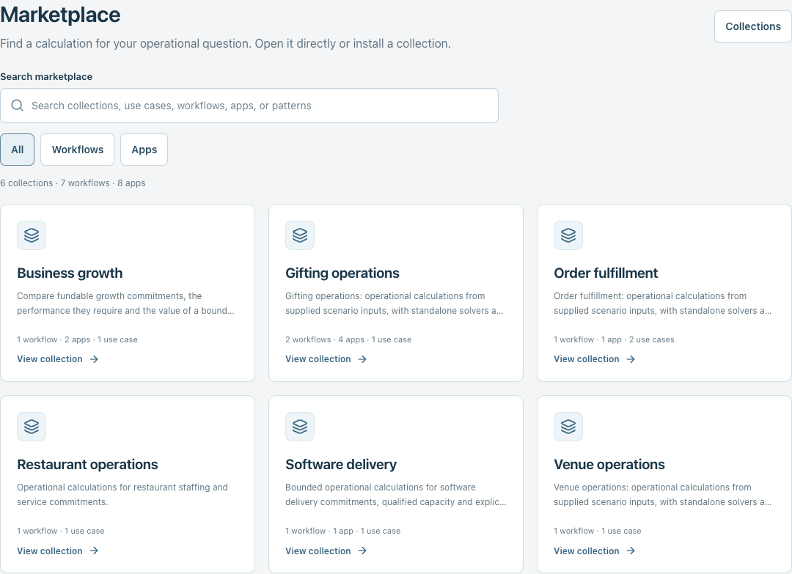
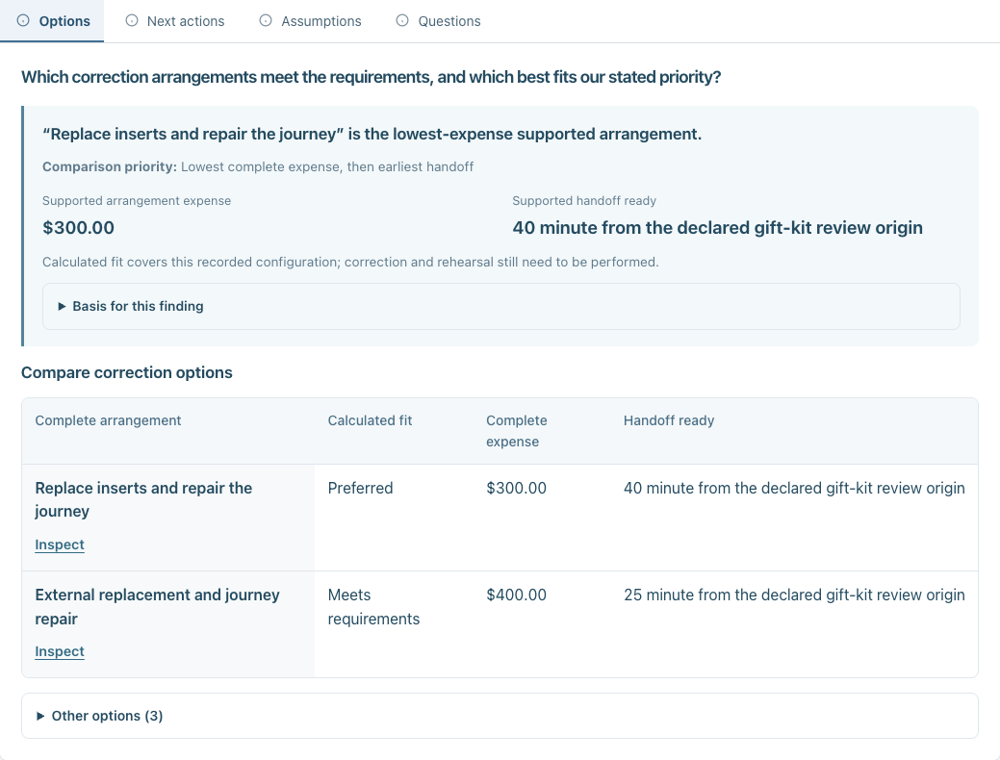

A cheaper shipment may depend on a registration that has not been confirmed. A faster gift-kit correction may be worth its premium only when the deadline is close. In both situations, a price alone leaves important questions unanswered.
DecisionLab Marketplace brings together published apps and workflows for recurring business questions. Begin with an existing review, supply the facts of your situation, and calculate which responses meet its stated requirements—and what remains unresolved.
You can explore a supplied example without building an app or writing code. Behind that experience, authors define reusable reasoning, configure it for a domain, and organize the resulting tools around the work people need to do.
Find a review that fits your work.
Start with a domain you recognize. Order fulfillment includes shipment reviews; Gifting operations includes gift-kit reviews. Each collection groups apps and workflows around related use cases: business situations and questions those tools help examine.
| Part | What it provides |
|---|---|
| Collection | A group of apps and workflows for related work in a domain. |
| App | Checks a particular question using defined inputs and rules, then reports the findings. |
| Workflow | Connected questions and app calculations that bring several findings into one review. |
| Case | One situation’s inputs and calculated findings, such as Maya’s shipment or Leah’s gift-kit campaign. |


Installing a collection makes its published tools available in your Collections. Opening an example gives you a case to work on. An app can address a question independently; a workflow connects calculations when a decision needs several answers.
Turn an example into a working case.
Choose Explore example to see a fictional situation with supplied inputs. Read the question and scope, then examine the facts it uses: perhaps an order, a deadline, available capacity and a spending boundary.
Use Calculate to produce the findings. The Decision summary leads with the answer and the alternatives. Supporting reports lets you inspect the conditions behind them. In a workflow, Decision process shows how its questions and available responses connect.
When a quote or availability changes, apply the new information and Recalculate. The earlier answer may no longer apply. Changing a case’s facts uses the published model; changing how that model assesses a question is authoring work.
For your own work, choose Start with my data where it is offered to create a separate case. Supply the records and operating facts the review requires. The example helps explain the tool; your case needs information appropriate to your actual situation.
See why the complete plan matters.
Maya needs goods delivered. Leah needs usable gift kits ready for handoff. Each needs a complete combination of work, timing, resources and required permissions. We call one such combination an arrangement.
The reports below assess those complete alternatives. Their answers explain why an attractive price or faster service may be insufficient on its own.
Shipment readiness

Maya’s $4,000 Direct quote requires transportation registration that the available record does not establish. The $6,000 Backup arrangement meets the requirements while that fact remains unresolved. The report explains why the cheaper quote is not yet a supported shipment.
Gift-kit readiness


With a full day available, Leah’s complete in-house correction fits for $300. A faster $400 external package also fits. Her story changes the remaining time to show when paying the premium protects the deadline.
A calculated finding gives people a basis for their next decision. It does not reserve freight, obtain spending authority or establish that the work has happened. Those business actions need their own people, processes and records.
Different jobs can reuse a way of reasoning.
Both examples ask: Can this complete plan meet the commitment, given the conditions it must respect? We call the reusable way of assessing that question the Complete a Commitment assessment pattern.
The shipment app supplies shipment concepts and requirements. The gift-kit app supplies correction work, rehearsal and handoff requirements. Reusing the assessment structure preserves those domain meanings while giving each application a way to examine complete alternatives.
A workflow can connect different kinds of assessment. The shipment workflow examines registration records, compares shipment responses, and separately considers whether paying for verification would help. From Arrangements to Assessments explains how these questions fit together. The broader idea is a language of reusable patterns that authors can combine for a particular decision.
From a reusable template to someone’s case.
Three contributions make this possible:
- Template authors define the reusable reasoning. A template describes the information a kind of assessment needs, how it evaluates the question and what its findings establish. Authoring tools capture that structure for reuse.
- App authors configure it for a domain. They define the relevant objects, requirements and comparison rules, then configure inputs and reports. They can connect apps into a workflow and publish the tools in a collection.
- People working on cases supply current facts. They enter the information for a shipment or campaign, inspect the findings and decide what to do next. They can use an existing review without first authoring its template or app.
One person can fill more than one role. The distinction keeps the reusable method, its domain configuration and the facts of a particular situation clear. Different cases can use the same published model while retaining their own inputs and results.
Start with a decision you recognize.
Follow Maya’s shipment decision to see how a current registration record changes the available response, or Leah’s gift-kit decision to see why a tighter deadline changes which correction is worth considering.
Then open Decision Lab and browse Marketplace for the work you do. The collection guides provide setup details; the report-reading companion helps you examine a finding and the conditions behind it.